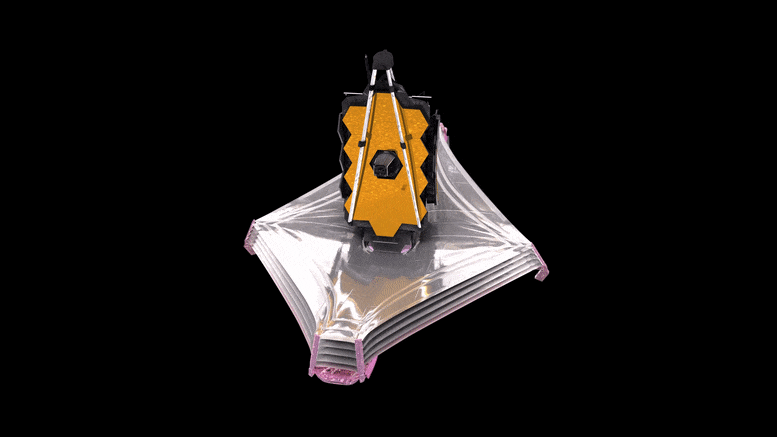

Le plus puissant des télescopes jamais envoyés dans l'espace a survécu la partie la plus périlleuse de sa mission : son déploiement, au terme de centaines d'étapes critiques. Depuis son lancement le jour de Noël, le télescope à dix milliards de dollars a déplié, déroulé et basculé ses différents membres dans leur configuration finale, une transformation délicate effectuée en filant à toute vitesse vers un point dans l'espace situé à plusieurs millions de kilomètres.
James-Webb est un télescope spatial servant d'observatoire fonctionnant principalement dans l'infrarouge, développé par la NASA avec la participation de l'Agence spatiale européenne (ESA) et de l'Agence spatiale canadienne (ASC). Le JWST est conçu pour poursuivre les travaux du télescope spatial Hubble, en effectuant toutefois ses observations dans des longueurs d'onde plus longues. Son lancement a lieu le 25 décembre 2021 et la première image de qualité scientifique produite par le télescope est publiée en juillet 2022.


La ceinture ou baudrier d'Orion est l'un des astérismes les plus connus, faisant partie de la constellation d'Orion. Composé des trois supergéantes bleues Alnitak, Alnilam et Mintaka, très brillantes et presque parfaitement alignées, l'astérisme, facilement reconnaissable à l'œil nu, est un point de repère du ciel nocturne et fait l'objet de maintes références mythologiques et religieuses.
La galaxie de la Roue de chariot est une galaxie lenticulaire à anneau située dans la constellation du Sculpteur. Sa vitesse par rapport au fond diffus cosmologique est de 8 790 ± 18 km/s, ce qui correspond à une distance de Hubble de 129,6 ± 9,1 Mpc (∼423 millions d'a.l.). Cette galaxie à un diamètre d'environ 188 000 années-lumière, légèrement plus grande que la Voie lactée. Elle possède une masse d'environ 2,9 à 4,8 milliards de masses solaires et une vitesse de rotation d'environ 217 km/s.
M74 (ou galaxie du Fantôme) est une galaxie spirale de grand style. située dans la constellation des Poissons. Sa vitesse par rapport au fond diffus cosmologique est de 359 ± 21 km/s, ce qui correspond à une distance de Hubble de 5,29 ± 0,48 Mpc (∼17,3 millions d'a.l.). M74 a été découvert par l'astronome français Pierre Méchain en 1780, puis observée par Charles Messier qui l'intégra dans son catalogue quelques semaines plus tard.

NGC 3132 (Caldwell 74) est une nébuleuse planétaire située dans la constellation des Voiles à environ 2000 années-lumière du système solaire. Surnommée nébuleuse aux huit éclats (par erreur de traduction de l'anglais « Eight-Burst », signifiant « explosion en huit »), ou nébuleuse de l’anneau austral, elle a été découverte par l'astronome britannique John Herschel en 1835. Son diamètre est d'environ de 0,93 année-lumière, ce qui représente près de 1500 fois la distance du Soleil à Pluton.
Jupiter est la cinquième planète du Système solaire par ordre d'éloignement au Soleil, et la plus grande par la taille et la masse devant Saturne, qui est comme elle une planète géante gazeuse. Elle est même plus volumineuse que toutes les autres planètes réunies avec son rayon moyen de 69 911 km, qui vaut environ onze fois celui de la Terre, et sa masse de 1,898 2 × 1027 kg, qui est 318 fois plus grande. Orbitant en moyenne à environ 779 millions de kilomètres du Soleil, sa période de révolution vaut un peu moins de 12 ans.
La nébuleuse de la Tarentule (également connue sous le nom de 30 Doradus, ou NGC 2070 ou Caldwell 103) est une région HII dans le Grand Nuage de Magellan. Initialement, on pensait qu'il s'agissait d'une étoile (d'où la dénomination désuète de 30 Doradus dans la classification de Flamsteed), mais en 1751 Nicolas-Louis de Lacaille a pu identifier sa nature nébuleuse. Elle se situe à 160 000 années-lumière de la Terre. Le taux de naissance d'étoiles y est plus élevé qu'en n'importe quelle région de notre Galaxie, ce qui a été à nouveau confirmé en 2022. La nébuleuse de la Tarentule est la plus grosse nébuleuse connue à ce jour.
M92 (NGC 6341) est un amas globulaire situé dans la constellation d'Hercule à environ 25 775 a.l. (8,3 kpc) du Soleil et à 31 310 a.l. (9,6 kpc) du centre de la Voie lactée. Il a été découvert par l'astronome allemand Johann Elert Bode en 1784. Charles Messier le découvrit indépendamment et l'inscrit à son catalogue le 18 mars 1781. L'astronome français Jérôme Lalande a aussi enregistré cet amas le 25 mai 1795. William Herschel a été le premier à résoudre M92 en étoiles en 1783.
Le Quintette de Stephan est un groupement visuel de galaxies situé dans la constellation de Pégase, et observé pour la première fois par l'astronome français Édouard Stephan en 1878. Stephan le catalogue en tant qu'agrégat de nébuleuses, personne n'imaginant à l'époque qu'il s'agit de galaxies constituées de milliards d'étoiles et situées en dehors de la Voie lactée.
La nébuleuse de la Carène (ou Grande nébuleuse de la Carène, NGC 3372) est une nébuleuse en émission et une nébuleuse par réflexion située dans la constellation de la Carène. Elle a été découverte par l'astronome français Nicolas-Louis de Lacaille en 1752 depuis le cap de Bonne-Espérance en Afrique du Sud.
Create by Geoffroy FONTAINE / 2022